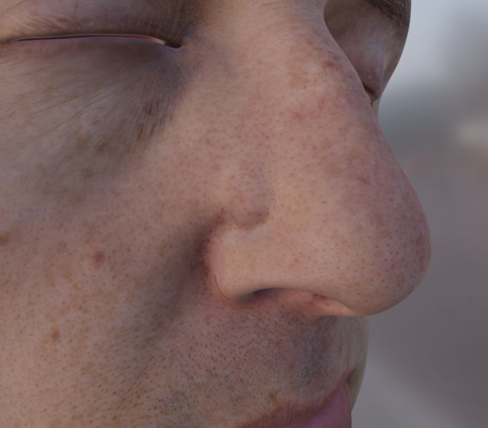
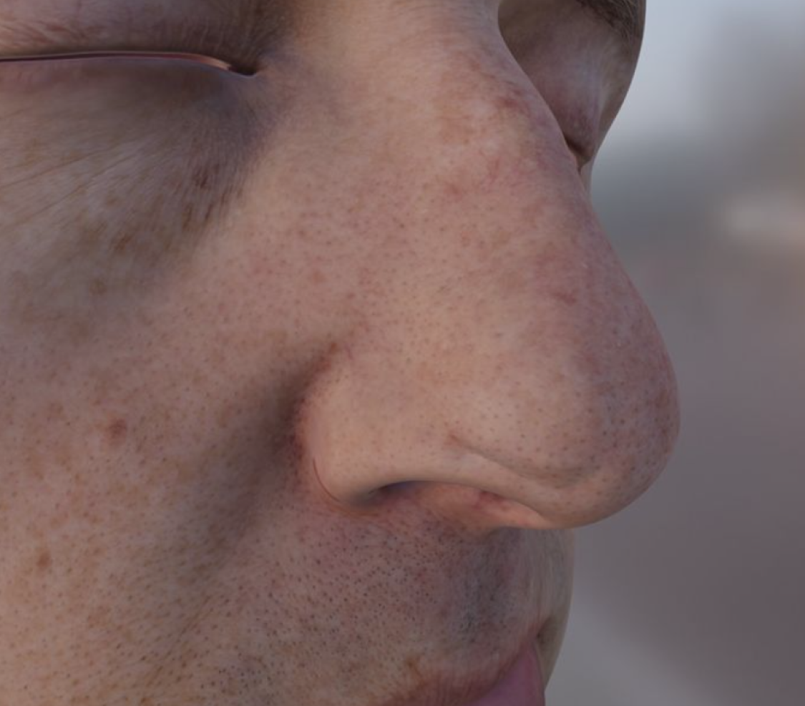

Potential Complications
- Contracture of the flap at its base, resulting in a wound and raised appearance (pin cushion)
- Higher likelihood of occurrence with rounded defects
- Initially managed with sequential steroid injection 
- Concentric contracture of scar at curvilinear borders, overtop of the scar sheath below
- Creates a “mushroom effect” where the flap appears raised 
- Flap necrosis can occur if the flap has poor vascularity due to wound closure with too much tension
- Persistent edema due to poor lymphatic drainage
- Unsightly tethering can deform the nasal tip (ultimately difficult to reverse/correct)
Pin-cushioning
Trap-door Deformity
Potential Complications